Redesigning RIT's Learning Management System to reduce student stress and improve academic workflows

Students were struggling to navigate MyCourses because the platform treats every context the same
Whether a student is in a lecture, studying independently, or submitting an assignment, the interface stays static. During a UX audit, MyCourses came across as functioning more like a file repository than an academic workflow tool — course pages were cluttered and inconsistently organized, making materials hard to find quickly, especially mid-lecture.
Assignment submission also lacked clear feedback, leading students to repeatedly re-check whether their work had actually uploaded. And communication inside the platform felt outdated enough that many students had moved conversations to Discord or WhatsApp instead.
Together, these patterns suggested the platform simply didn't align with how students actually manage their academic workflow.
Three structural issues kept surfacing
To understand the current experience, I audited the existing platform to identify what was contributing to confusion, inefficiency, and poor task flow.
Multiple options carried similar visual weight, forcing students to scan and rely on memory rather than an intuitive structure — increasing cognitive load during time-sensitive moments.
Assignments, materials, and related tasks lived across different sections with no clear connection, forcing students to mentally bridge gaps between pages just to complete one task.
The homepage surfaced secondary information first, while critical actions like accessing materials or assignments were pushed further down the hierarchy.
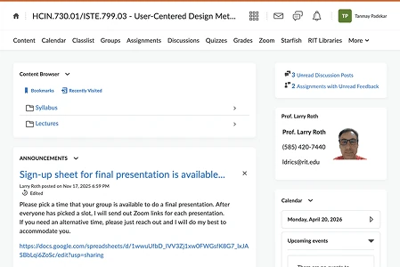
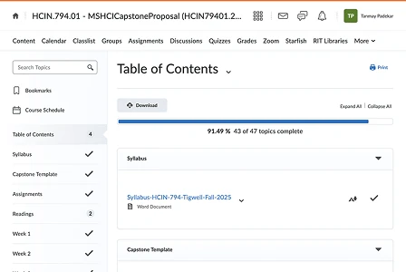
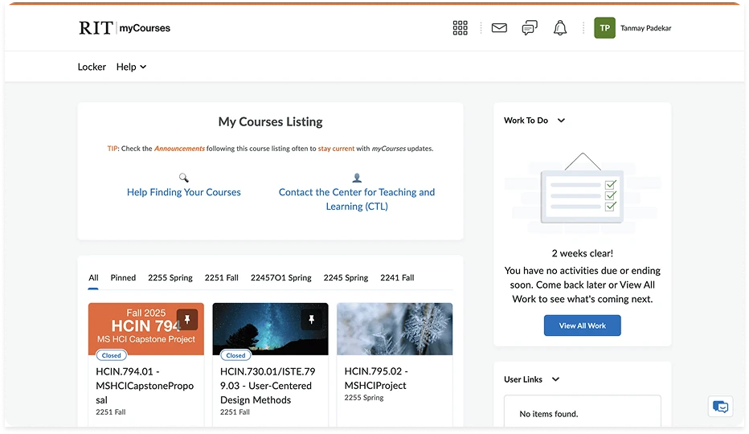
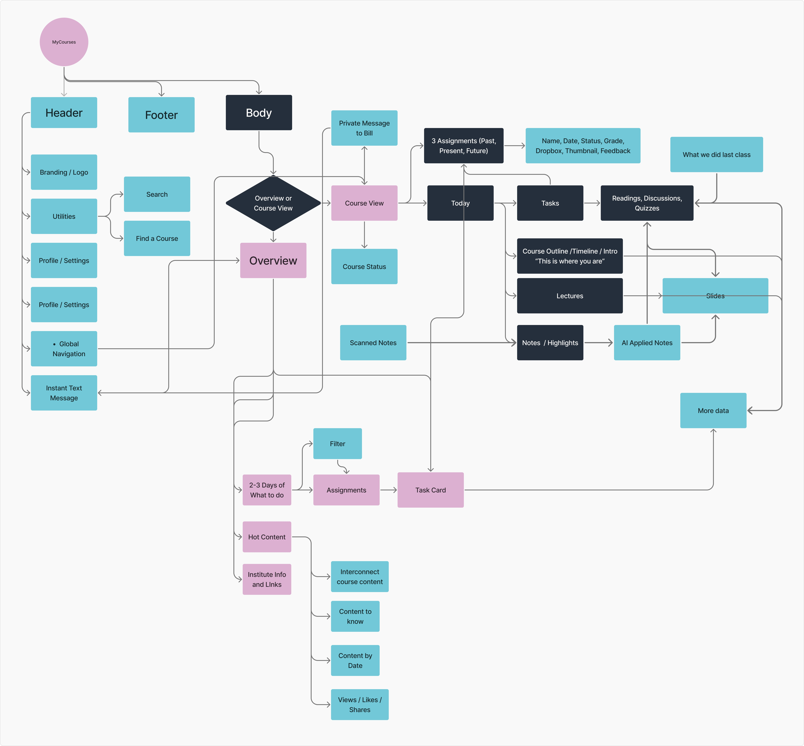
A survey to validate the audit findings
To better understand how students actually interact with MyCourses, I ran a survey focused on navigation, assignment submission, and communication — anonymous, RIT students, aimed at uncovering how students manage academic workflow across different contexts.
The platform treats every interaction the same — and that's the actual problem
The current MyCourses experience doesn't support how students actually manage their academic workflow. By treating all interactions identically, it creates friction in three critical areas: accessing materials during lectures, confirming assignment submissions, and communicating with peers. As a result, students lean on workarounds and spend unnecessary cognitive effort just navigating the system.
- Navigation friction during time-sensitive situations
- Lack of clear, reliable system feedback
- Fragmented communication happening outside the platform
How might we redesign MyCourses to match how students actually work?
Specifically: reduce cognitive load, improve clarity during key interactions, and enable more natural communication — without adding complexity on top of an already cluttered system.
Three directions, one clear winner
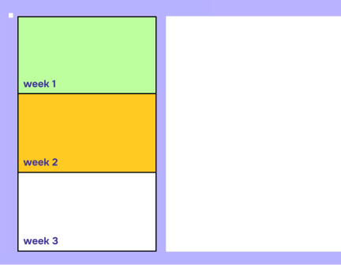
A unified dashboard aggregating assignments, deadlines, and schedules into one view.
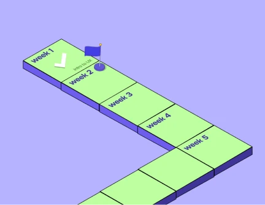
Visualized academic progress as a journey to keep students engaged with coursework.
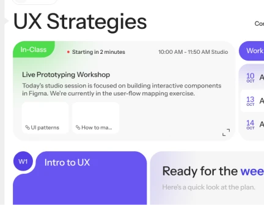
An adaptive interface that changes based on student context — in-class vs. studying — prioritizing relevant info and actions.
Simplifying the key student interactions
I mapped flows for the most common student tasks, focused on reducing friction and steps during critical moments.
Contextual Learning
A dedicated toggle on the Course Page that switches the interface between "Study Mode" and "In-Class Mode."
Toggled to "In-Class," the dashboard minimizes upcoming assignments and prioritizes live tools: lecture slides, collaborative files (Figma), and real-time polls.
It aligns the digital interface with the physical environment, cutting distractions during lectures.
A calmer, more legible interface
Typography — Instrument Sans, a variable sans-serif chosen for geometric clarity and strong on-screen legibility, keeping dense academic content readable without visual fatigue.
Color — a deep navy-dark base (#27303A) to reduce eye strain during late-night study sessions, with a lime accent (#93F604) reserved for primary actions and success states. Three additional soft accent colors color-code individual courses for quick recognition.
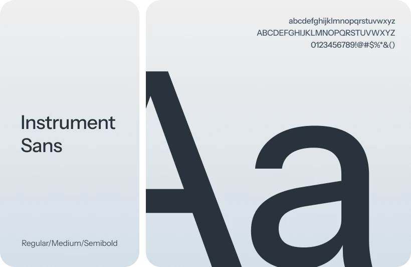
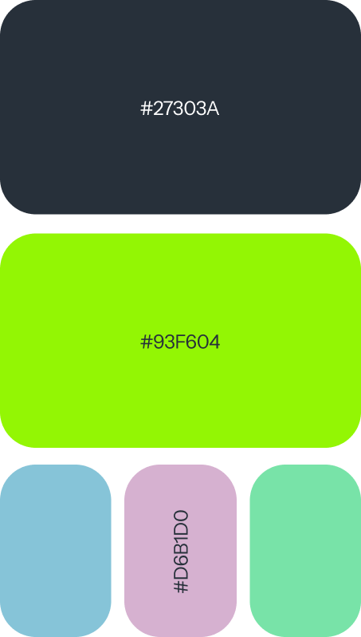
A centralized, context-aware student hub
The redesigned homepage surfaces the most relevant information based on what a student actually needs in the moment, instead of scattering content evenly across the page.
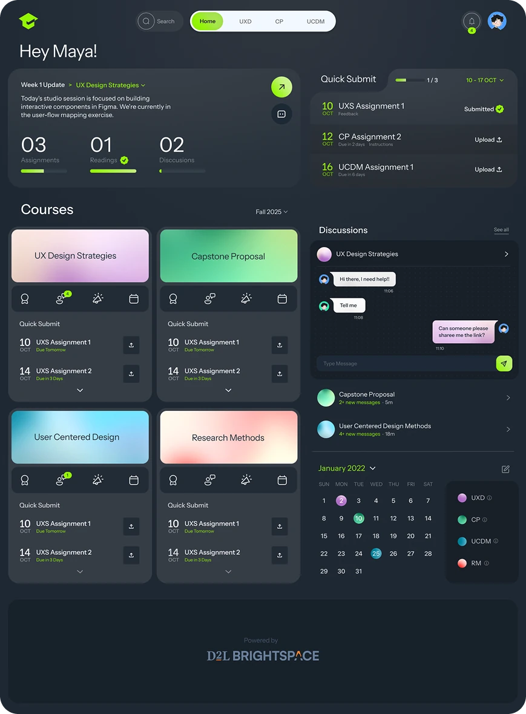
Greets students with a contextual summary — weekly updates, pending tasks, and overall progress.
Assignments surface with deadline and status, so students can upload work without hopping across pages.
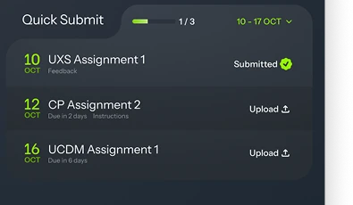
Each course is a self-contained unit — assignments, notifications, and key actions in a single card.
Adapting the interface for real-time learning
In-Class Mode adapts the interface to support students during live lectures — prioritizing relevant materials and minimizing distractions, so students can find what they need without navigating a complex course structure.
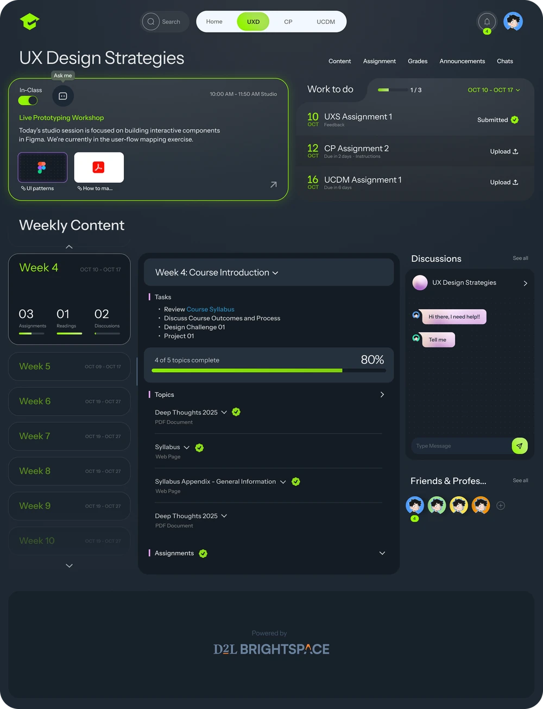
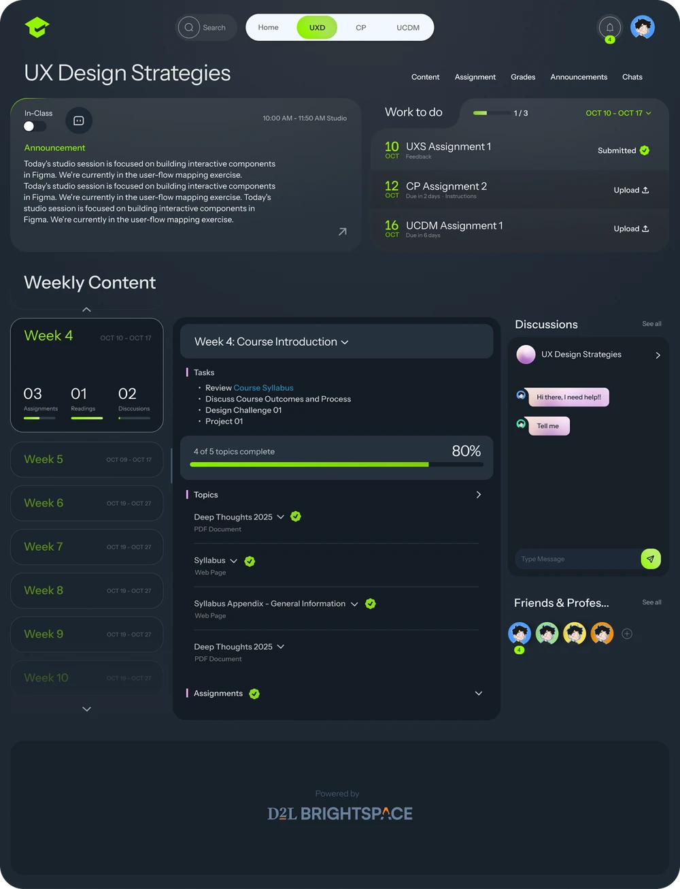
The system adjusts based on whether the student is in a live class, surfacing lecture materials instantly.
Lecture files, links, and resources appear upfront — no folder-hunting mid-class.
Expandable sections and progress indicators help students track completion and stay aligned with the course flow.
Submitting with confidence, not uncertainty
The assignment experience was redesigned around clear status indicators and intuitive interactions, so students can quickly understand progress and complete tasks with confidence.
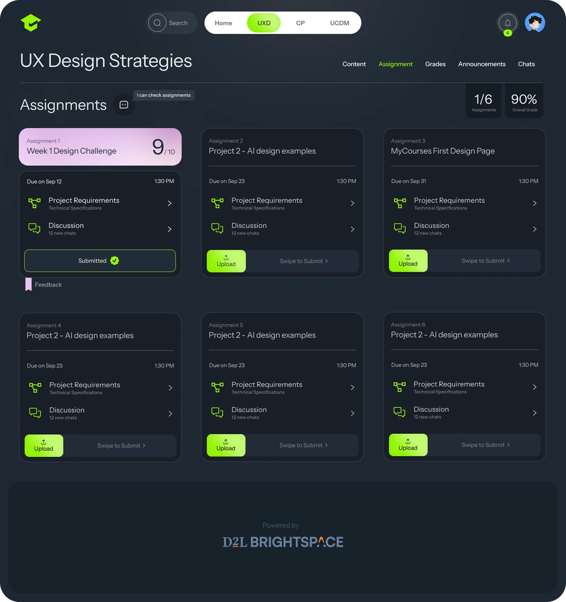
Each card bundles requirements, discussion, deadlines, and actions in one place — no more navigating across pages for one assignment.
A gesture-based submission replaces the traditional button — more intentional, more satisfying, and it reduces accidental submissions while giving a clear sense of completion.
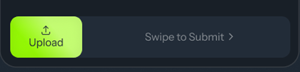
Real-time, contextual collaboration
Static discussion boards were replaced with a real-time, chat-based interface — supporting faster, more natural interactions without leaving the learning environment.
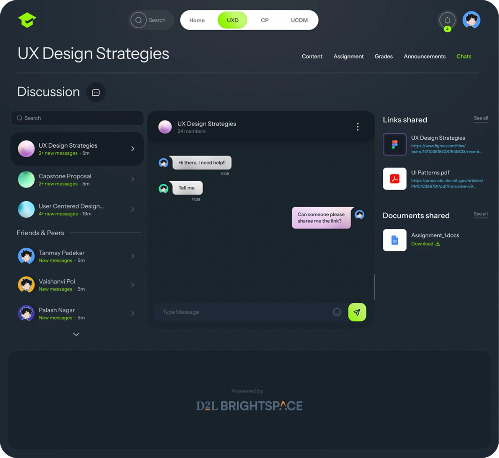
Chat replaces forums, so students communicate more naturally and get quicker responses.
Conversations are organized by course and topic, keeping discussion relevant and easy to navigate.
Links, documents, and files can be shared directly in conversation — no platform-hopping required.
Faster, clearer, more confident
The redesigned system streamlined key interactions, making it easier for students to navigate, submit work, and stay on track.